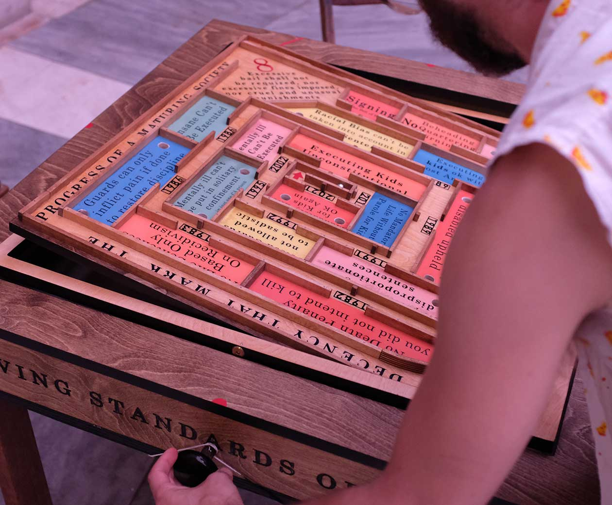
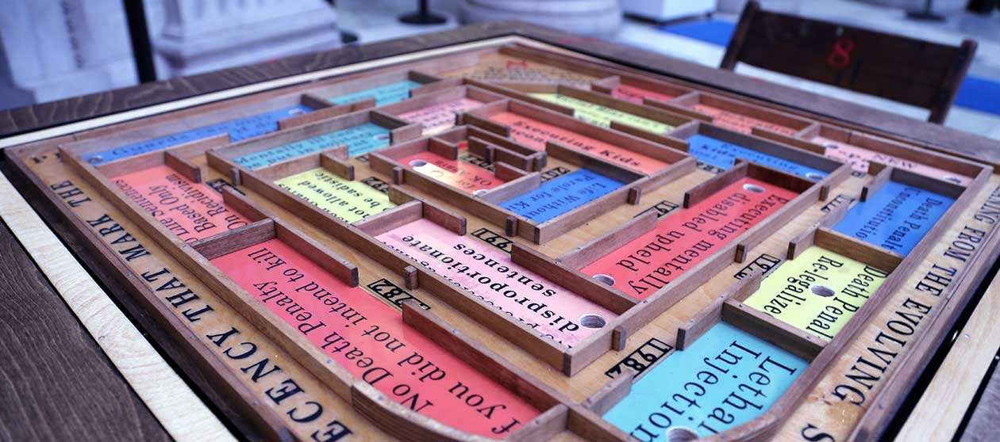

Eighth Amendment
Excessive bail shall not be required, nor excessive fines imposed, nor cruel and unusual punishments inflicted.
Photo courtesy of the artist
Danielle Isadora Butler
Evolving Standards of Decency, 2022
Gimbaled maze
30-inch by 30-inch table with chairs
Artist Commentary
Evolving Standards of Decency is a gimbaled maze. The maze makes up the top of a table. Players sit on all four sides. A marble is guided by tilting the surface of the maze. Like the classic tilting maze from childhood, this one has barriers to work around and holes to avoid. The path of the maze takes you through the evolution of major Eighth Amendment cases in chronological order. Each case is summarized and simplified in the graphics on the playfield. The 1879 Wilkerson v. Utah is distilled into “No beheading, quartering, or burning.” The step from there to the case that deemed the electric chair to be humane, instantaneous, and painless is straight—a small step in our evolution. When the death penalty moved from unconstitutional back to constitutional the path of the maze veers back on itself—an instance of the nonlinear nature of evolution. The goal of gameplay is to stay on the path and not fall into the holes. Holes represent the areas of the punitive system that are not protected by the Eighth Amendment or when the court had “fear of too much justice,” as Justice William Brennan put it in the 1987 case that decided that proven racial bias in death-penalty sentencing can’t be taken into account. If you can avoid the holes and make it to the center of the maze, the graphics end in 2021.
The American criminal-justice system is overwhelmingly large and dauntingly broken. This piece is made to be approachable. I want you to touch it and interact without instruction. I want its subject matter to be small enough to enable you to ponder this deeply hurtful system while remaining curious. I want us to remember that the things that are considered normal right now might soon be considered abhorrent.
The language of the Eighth Amendment is squidgy. “Excessive” can only be known by comparison to something lesser. What is considered “cruel and unusual” can only be based on an agreed-upon usual. In 1958 (Trop v. Dulles), the Supreme Court stated that those open-ended words “draw [their] meaning from the evolving standards of decency that mark the progress of a maturing society.” The Eighth Amendment shifts with culture. It is important to remember that culture is malleable and that you make up that culture—that you are partially responsible for that change or lack of change. This piece invites you to navigate the evolution of major Eighth Amendment cases. It highlights how far we have come and how recently it was constitutional to—for example—execute a child. It is easy to imagine that evolution is linear. For four years in the 1970s, the United States didn’t allow capital punishment. And despite a fifteen-year trend toward progressive sentencing for children, in 2021 we returned to allowing mandatory life without parole for kids. The curving track of the maze shows that evolution doubles back in labyrinthine loops. Progress toward being less cruel is hardly assured.
The language I use to summarize the cases is chosen to remove the distance that jargon allows. The system as a whole perpetuates because the divides of race and class separate people with privilege and power from communities most impacted. By replacing juvenile with child and offender with person in the summary of a case on the gameboard, I hope to subtly bring us closer to remembering the humanity of people in prison. And that if you have never had your family or community torn apart through incarceration, you should know that the biggest difference between juvenile offender and naughty child is most likely the work of privilege.
Like the pathway of this maze, the legal scope of the Eighth Amendment is narrow. Through what is on and off the “playing field,” I want us to consider what and who gets left out of the legal protection offered by the Eighth Amendment. The amendment does not extend to people in immigration jail, the amendment doesn’t protect people on Rikers Island awaiting sentencing, and most cases concerning prison conditions don’t make it to trial. In sentencing a judge gives years, yet statistically they are also likely sentencing a person to sexual assault, violence, and a drop in life expectancy.
Through the simple interaction of a gimbaled marble maze, I hope to juxtapose the promise of the Eighth Amendment with our evolution thus far.
I would like to thank Robin Reid, Olwyn Conway, Keramet Reiter, Paul Grotas, Lea Rosen, Marty Tankleff, Marc M. Howard, Sara Bennett, and Alec Karakatsanis for generously sharing their expertise.
Photo by John Sharp
Curator Commentary
Of the amendments, the Eighth is the one the average American most likely assumes is followed, but it is also the least likely to be scrutinized to ensure its fair application. It also one of the amendments in which the unspoken assumptions of for whom the laws apply most acutely manifest. Blurring the picture of the unequal protections from the carceral system is the radicalized social landscape of the US. What of those who find themselves ensnared by the US legal system yet outside the protections of the Eighth Amendment? White Americans are statistically far less likely to be imprisoned than Black and Hispanic Americans and Indigenous people, leading to disproportionate representation within the carceral system. If someone’s race sets them apart from the imagined “just” American, is the average American in turn likely to express concern about unjust bails, fines, and punishments?
One of the more useful tools for understanding how games function is systems dynamics, a framework for making sense of how complex machines and social practices operate and impact those who come in contact with them. Simply put by Donella Meadows, one of the most important systems theorists, a system is a set of elements whose interactions lead to a particular outcome or purpose. This is a deceptively simple means to unpack the complexities of the world. Often, analyzing a phenomenon contradicts common beliefs and otherwise sheds light on how little we understand about the given phenomenon.
Viewed as a system, the Eighth Amendment’s presumed protections are in fact unequally applied, often along lines of race, gender, and other socioeconomic factors. Danielle I. Butler’s Evolving Standards of Decency presents a playable model for the challenges many Americans confront when navigating the three assurances of the Eighth Amendment. Using a gimbaled maze (more often seen at smaller scales as handheld puzzles), Butler asks the player to keep a ball moving toward the center of the maze while avoiding the holes along the way. Each of the holes represent cases in which one of the Eighth Amendment’s three guarantees fell short of protecting an individual. The maze as well addresses those who fall outside protections expected by US citizens yet still find themselves ensnared in the US legal system.
The Eighth Amendment builds upon the guarantees of the Fourth and Fifth Amendments to be shielded from unfair persecution, the structure of a trial, and the presumption of innocence until proven guilty found in the Sixth Amendment. And yet most accused of crimes are assumed to be guilty and therefore not worthy of the protections afforded by the Eighth. The difficulties of solving a gimbaled maze are not so distant from those of everyone gaining access to the full guarantees of the Eighth Amendment.
Danielle Isadora Butler designs experiences, installations, and objects that create new opportunities for emotional connection. She has designed and produced playgrounds that teach about cooperation, multi-sensory poetry archives that encourage deep listening, and large-scale games that connect participants to their locales. Her skills in human-centered design extend from a background that combines arts education, creative technology, and restorative justice. Butler believes that building relationships is the key to engaging people in issues that feel too large or abstract to comprehend. She is especially passionate about improving access to water and using creative interventions to deepen New Yorkers’ relationship to their harbors. She is co-founder of both the Tideland Institute and the Awesome On The Water organization, which support cultural initiatives on New York waters.
1
Freedom of Religion, Speech, Press, Assembly, Petition
Congress shall make no law respecting an establishment of religion, or prohibiting the free exercise thereof; or abridging the freedom of speech, or of the press; or the right of the people peaceably to assemble, and to petition the Government for a redress of grievances.
2
The Right to Bear Arms
A well regulated Militia, being necessary to the security of a free State, the right of the people to keep and bear Arms, shall not be infringed.
3
The Housing of Soldiers
No Soldier shall, in time of peace be quartered in any house, without the consent of the Owner, nor in time of war, but in a manner to be prescribed by law.
4
Unreasonable Search and Seizure, Warrants, Probable Cause
The right of the people to be secure in their persons, houses, papers, and effects, against unreasonable searches and seizures, shall not be violated, and no Warrants shall issue, but upon probable cause, supported by Oath or affirmation, and particularly describing the place to be searched, and the persons or things to be seized.
5
Due Process, Self-Incrimination, Eminent Domain
No person shall be held to answer for a capital, or otherwise infamous crime, unless on a presentment or indictment of a Grand Jury, except in cases arising in the land or naval forces, or in the Militia, when in actual service in time of War or public danger; nor shall any person be subject for the same offence to be twice put in jeopardy of life or limb; nor shall be compelled in any criminal case to be a witness against himself, nor be deprived of life, liberty, or property, without due process of law; nor shall private property be taken for public use, without just compensation.
6
Rights of Defendents in Criminal Trial
In all criminal prosecutions, the accused shall enjoy the right to a speedy and public trial, by an impartial jury of the State and district wherein the crime shall have been committed, which district shall have been previously ascertained by law, and to be informed of the nature and cause of the accusation; to be confronted with the witnesses against him; to have compulsory process for obtaining witnesses in his favor, and to have the Assistance of Counsel for his defense.
7
Rights in Civil Cases
In suits at common law, where the value in controversy shall exceed twenty dollars, the right of trial by jury shall be preserved, and no fact tried by a jury, shall be otherwise re-examined in any court of the United States, than according to the rules of the common law.
8
Excessive Bails, Fines, or Punishment
Excessive bail shall not be required, nor excessive fines imposed, nor cruel and unusual punishments inflicted.
9
Additional Fundamental Rights of People
The enumeration in the Constitution, of certain rights, shall not be construed to deny or disparage others retained by the people.
10
Separation of Powers and Federalism
The powers not delegated to the United States by the Constitution, nor prohibited by it to the States, are reserved to the States respectively, or to the people.